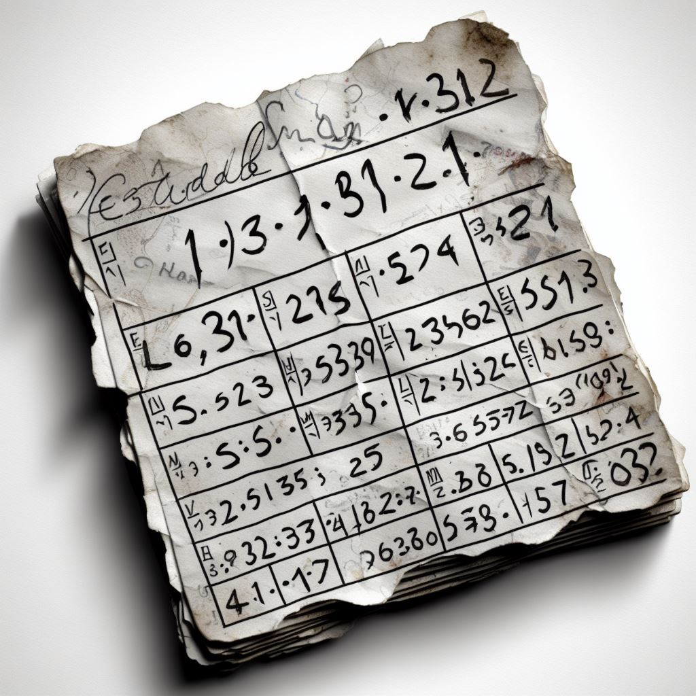

Rebusløp på Campus#
I dette rebusløpet skal dere gjennom 8 oppgaver finne frem til steder på Campus ved hjelp av målinger og enkel geometri. Når dere har funnet stedet, så skal dere dokumentere hvor dere mener det er ved å ta en selfie av hele gruppa. Til hver oppgave er det også et spørsmål som dere må finne frem til svaret på.
Lykke til!
NB: Før dere begynner på rebusløpet er det viktig at dere har lekt dere litt med Google Earth på forhånd og prøvd noen av funksjonene.
Spørsmål 1 - Totalstasjon#
En totalstasjon er satt opp ved Vitenparken. En totalstasjon er et instrument som måler horisontalvinkel, vertikalvinkel og avstand. Gå ned til den oppsatte totalstasjonen når dere har funnet de nøyaktige vinklene i tabellen nedenfor og still inn totalstasjonen med de riktige vinklene. Vinklene har enheten gon.

Horisontalvinkel |
Vertikalvinkel |
|---|---|
BAB.IEAC |
AFG.IHGE |
Spørsmål: Hva heter fossen?
Spørsmål 2 - Transformasjon#
I geomatikk bruker vi noen ganger ECEF koordinater istedenfor breddegrad og lengdegrad fordi de er enklere å gjøre beregninger med. Problemet med disse ECEF koordinatene er bare at det ikke er så helt enkelt å tolke hvor posisjonen er. Senere i studiet må dere programmere denne transformasjonen selv, men i dag holder det å bruke denne linken for å transformere mellom disse to koordinattypene.

Transformer ECEF koordinatene nedenfor til breddegrad og lengdegrad.
Spørsmål: Hvilket årstall?
Spørsmål 3 - Uleselig#
Du finner en lapp på bakken hvor noen har skrevet en posisjon med breddegrad og lengdegrad. Lappen er helt utvasket og du klarer såvidt å tyde tallene, men dessverre så er sekundene i lengdegraden blitt helt borte. Bygningen dere skal finne ligger midt imellom ytterpunktene til de mulige posisjonene.
{kind=link}
Spørsmål: Hvem holder til i dette bygget?
Spørsmål 4 - En flat verden#
Kartkoordinater blir ofte gitt i nord og øst når jordkloden er gjort flat med en kartprojeksjon. Da er hele den krumme jordoverflaten brettet ut som et kart. Problemet er bare at avstander, vinkler eller areal blir litt feil i forhold til virkeligheten - det er ikke mulig å bevare alt.
Kartsystemet EUREF89 UTM (Sone 32) er det som er vanligste i Norge.

N koordinaten er antall meter fra ekvator, mens E er 500 000 pluss antall meter fra en bestemt lengdegrad (9 grader øst i sone 32). Øst-koordinaten begynner på 500 000 for å unngå negative tall. Gå til disse UTM koordinatene, og kom dere opp så høyt dere kan for å finne stedet.
Hint: Bygget er høyere enn du tror
Spørsmål: Hva tror dere denne delen av bygget har vært brukt til?
Spørsmål 5 - Rundt og rundt#
Rundt om i Ås er det mange rundkjøringer. I tabellen nedenfor finner dere posisjonen til tre av dem. Stedet dere skal frem til er i skjæringspunktet mellom tre sirkler.

Breddegrad |
Lengdegrad |
Radius |
|---|---|---|
\(N59^0 39' 53.26''\) |
\(E10^0 46' 21.48''\) |
\(952m\) |
\(N59^0 39' 59.95''\) |
\(E10^0 48' 20.45''\) |
\(2730m\) |
\(N59^0 39' 53.37''\) |
\(E10^0 45' 39.69''\) |
\(454m\) |
Spørsmål: Hvor lang er den?
Spørsmål 6 - Syn som en ørn#
Du står ved Gaustadtoppen turisthytte ved Rjukan. Du har syn som en ørn og langt borte i det fjerne ser noe som ligner på en marmorblokk. Nysgjerrig som du er finner du frem kompasset og leser av en retning på \(98.83^0\). Etter mye strev og nøye måling finner du tilslutt ut at avstanden er \(120267m\).
{kind=link}
Spørsmål: Hva heter skulpturen?
Spørsmål 7 - A numbers game#
Du er ute å går på Campus. Plutselig snubler du i et hull i bakken. Nede i hullet finner du en gammel Nokia mobiltelefon. Den siste som brukte telefonen hadde skrevet en SMS, men det eneste du kan se ser er rekkefølgen på tastene som ble trykket inn. Tallsekvensen finner du nedenfor.

\(224445588223366\)
Hint: Se youtube hvordan man skriver SMS med tastaturet til en Nokia mobiltelefon
Spørsmål: Hvor er dette?